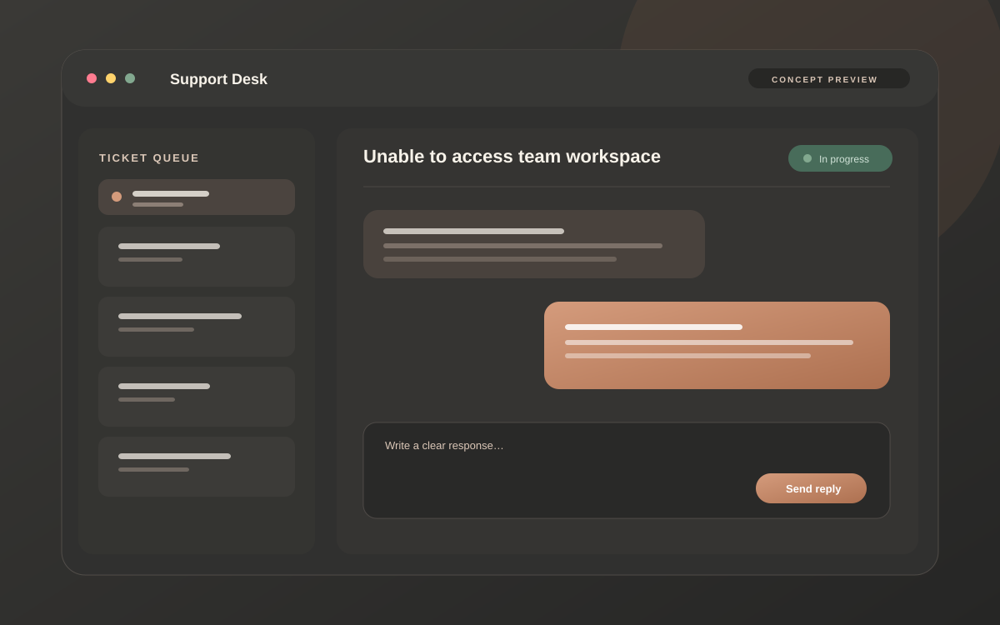
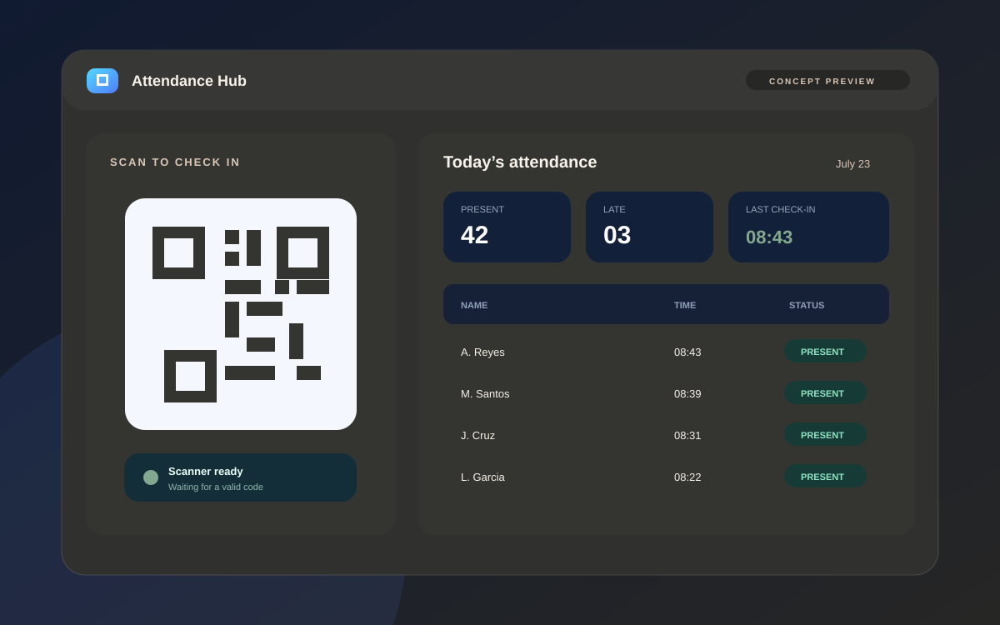
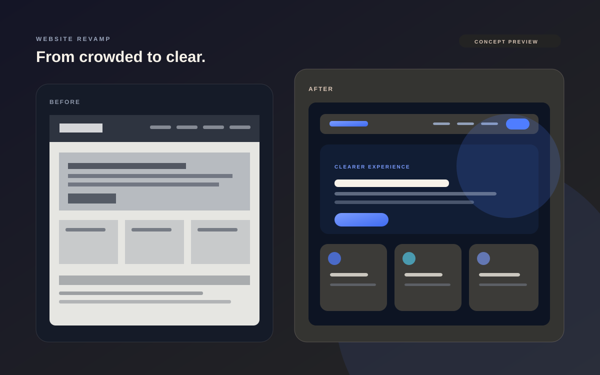
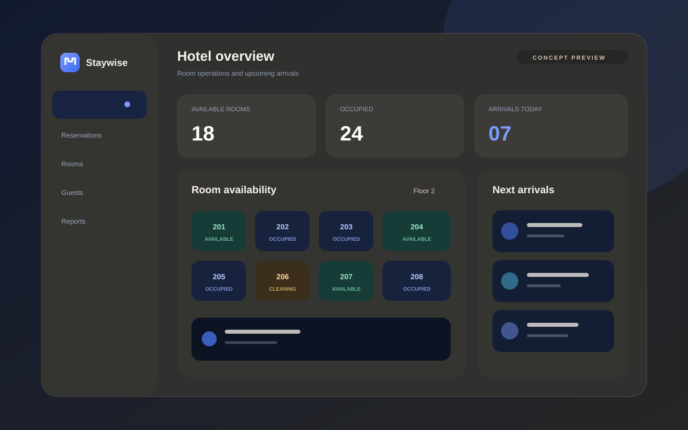
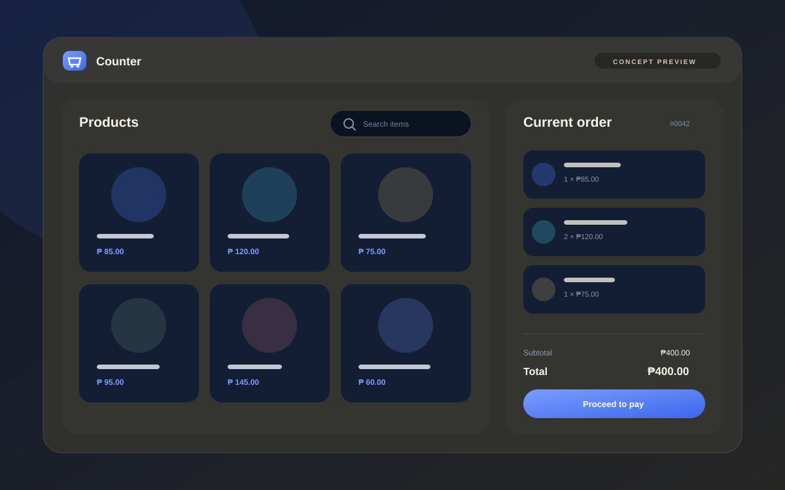

AWS
Amazon Web ServicesAWS Certified Cloud Practitioner
Technical Support Engineer
Powered by Curiosity. Driven by a Thousand Thoughts.
I help teams resolve technical issues, improve digital systems, and create dependable user experiences.
Hands-on experience across web systems, cloud assistance, documentation, testing, and structured troubleshooting.

Selected certifications supporting my work across cloud, infrastructure, and technical support.
A practical support approach built around evidence, communication, validation, and dependable follow-through.
Wrandell I. Almeda is a Technical Support Engineer with experience in IT support, customer service, troubleshooting, ticket handling, documentation, and end-user assistance. He supports users by analyzing incidents, coordinating resolutions, assisting with system testing and configuration updates, and communicating clearly with both users and technical teams.
His background also includes website development, cloud-related support, DNS and SSL configuration, deployment checks, email configuration, and file storage integration. He approaches technical problems with patience, structured analysis, clear documentation, and a strong focus on the user experience.
I help users, teams, and organizations resolve technical issues, improve support processes, maintain clear documentation, and implement dependable web and cloud-related solutions.
Investigate symptoms, reproduce issues where possible, and isolate the most likely cause before changing anything.
Provide clear support, maintain communication, and coordinate the next action until work can continue.
Assist with websites, DNS, SSL, email configuration, deployment checks, and cloud-related support tasks.
Improve documentation, testing, handover, and recurring workflows so the resolution is easier to maintain.
A professional path shaped by technical troubleshooting, customer communication, documentation, and coordinated support.
Three projects are presented first. Additional concepts remain available without overwhelming the page, and incomplete case-study fields stay hidden until verified content is supplied.

Concept preview01An example workspace for receiving, prioritizing, tracking, and documenting support requests.

Concept preview02An example attendance experience combining QR check-in, daily status, and record review.

Concept preview03An example redesign direction focused on clearer hierarchy, responsive layouts, and simpler navigation.

Concept preview04An example operations view for room availability, reservations, guest records, and check-in status.

Concept preview05An example checkout workflow with product browsing, cart review, totals, and payment status.
Skills are grouped by purpose without unsupported proficiency scores. AI tools are presented as development and productivity assistants.
Only information currently supplied to the portfolio is displayed. Optional dates, credential IDs, and verification links stay hidden until they are added.
Eulogio “Amang” Rodriguez Institute of Science and Technology
Each stage keeps the expected user outcome, available evidence, safe testing, and dependable follow-through in view.
Gather the user’s concern, system context, symptoms, and expected behavior.
Review available evidence, reproduce the issue where possible, and form a grounded view of likely causes.
Narrow the issue carefully and test the smallest safe change without introducing unrelated risk.
Apply the appropriate fix or coordinate the correct next action with users and technical teams.
Confirm that the issue is resolved and that the expected behavior has been restored.
Record the issue, actions taken, outcome, and relevant follow-up information.
I’m open to technical support, web development, IT operations, and technology-focused opportunities where I can help solve problems and support users effectively.